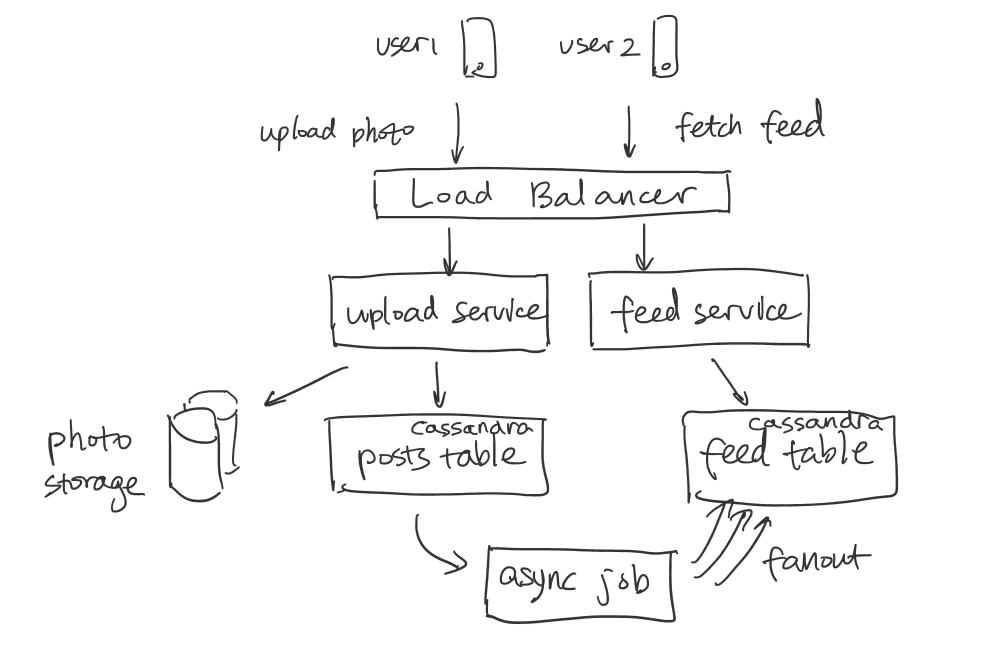

grokking system design solution
Ace system design interview(Who claims to be Interviewer from FLAG)
1. Storage
Storage for photo:
say everyday 2m photos created and average photo size 200kb, total storage is 2m * 200kB = 400 * 10^9Byte = 400GB.
one day we need 400GB disk, and one month, we need 12TB disk, so photos cannot be stored in one machine, what we need is
distributed file storage such as S3.
storeage for table
image table:
id 4byte + user id 4byte + title 50byte + createdAt 50 byte + image path = 256Byte = 364 Byte
364Byte * 2m = 0.7G per day, 21GB per month. 240GB per year.
user table:
id 4Byte + name 20byte + email 50byte + created At 4Byte + last login 4Byte = 82byte
say there is 500M user. total size = 82 Byte * 500M = 40GB
Friendship table:
id 4byte, from 4 byte, to 4 byte, total 12byte
500M users, each user follow 100 user, total = 500M * 100 * 12byte = 0.6TB.
QPS:
say there are 500M user, 1M daily active user, each user does 10 read operation per day.
say there are 500M daily active user, each user does 1 write operation per day.
Read QPS = 1M * 10/86400 = 100.
Write QPS = 10
Bandwidth:
bandwidth = QPS * average size/per request or response
if average size per response 2M
outgoing bandwidth = 100 * 2M = 200M/s
Table schema:
User table
id int PK
name varchar(25)
email varchar(30)
updatedAt timestamp
createdAt timestamp
photo table
id int PK
userId int FK
title varchar(50)
createdAt timeStamp
ImagePath varChar(50)
frinedship table
id int PK
from int
to int
Generate News feed for sam whose user id is 1
select photo.title, photo.user_id, photo.createdAt from
(select * from friendship where from_user = 1) as f
left join photo
on f.to_user = photo.user_id
order by photo.createdAt;
// Sql statment to creat table and insert value
create database ins // create database
use ins// use database
// create user table
create table user(id int not null auto_increment, name varchar(50) not null, email varchar(50), primary key (id));
// insert value;
insert into user (name, email) values ("Lyn", "lzengzeng22@gmail.com");
insert into user (name, email) values ("Mark", "mark@gmail.com");
insert into user (name, email) values ("Jay", "mark@gmail.com");
insert into user (name, email) values ("NanXia", "Nan@gmail.com");
insert into user (name, email) values ("Jing", "Jing@gmail.com");
// create friendship table;
create table friendship(id int not null auto_increment, from_user int not null, to_user int not null, primary key (id));
insert into friendship (from_user, to_user) values (1, 2);
insert into friendship (from_user, to_user) values (1, 3);
insert into friendship (from_user, to_user) values (1, 3);
insert into friendship (from_user, to_user) values (2, 5);
insert into friendship (from_user, to_user) values (2, 3);
insert into friendship (from_user, to_user) values (4, 3);
// create photo table
create table photo(id int not null auto_increment primary key, user_id int not null, title varchar(100) not null, image_path varchar(50) not null, createdAt TIMESTAMP DEFAULT CURRENT_TIMESTAMP );
insert into photo (user_id, title, image_path) values (3, "Japan photo", "Azure/Jay");
insert into photo (user_id, title, image_path) values (2, "California San Diego photo", "Azure/Mark");
insert into photo (user_id, title, image_path) values (3, "Cancun trip", "Azure/Jay");
// Query to get user 1 的 News feed
select photo.title, photo.user_id, photo.createdAt from
(select * from friendship where from_user = 1) as f
left join photo
on f.to_user = photo.user_id
order by photo.createdAt;
此处还可以用NOSQL DB 来存用户和照片的关系, 哪个用户拥有哪些照片, 这样的话就不用像上面那样sql语句做join between Photo table和user table做Join
key: userID
value: List of photo ID the user owns。
2->{100,101}
3->{102,103}

Push mode:
When someone publishes a photo, it is going to fan out
the message to all its followers. How to do it?
We create a feed table for user.
Schema;
feedtable
id int not null auto_increment
userId
photoId
sql statement to create table:
create table feed(id int not null auto_increment, userId int not null, photoId int not null, primary key (id));
When someone uploads a photo, say Jay uploads a photo
insert into photo (user_id, title, image_path) values (3, "Japan photo", "Azure/Jay");
It is going to fan out this message to Jay's followers, in this case it is me, mark and Nan.
insert into feed(userId, photoId) values(1, 1);
insert into feed(userId, photoId) values(2, 1);
insert into feed(userId, photoId) values(4, 1);
and then mark uploads the picture
insert into photo (user_id, title, image_path) values (2, "California San Diego photo", "Azure/Mark");
It is going to fanout the message to Mark's friend, which is Lyn
insert into feed(userId, photoId) values(1, 4);
Then, you want to Lyn's news feed, just do a joing between news table and photo Table
select title, image_path, createdAt from
(select photoID from feed where userId = 3) as f
left join photo
on f.photoId = photo.id
order by photo.createdAt desc;
// Optimization to create index on photo id and photo creation time.
create index idx_on_photo_id_and_creationTime on photo(id, createdAt);
2. reliability and Redundency
1. Problem with one single storage server: Single point failure
2. Solution: creating replica,
3. when one server fails, the trafic will be routed to the remaining ones, which is called fail-over
3.Web server optimization:
Knowledge: Web server has connection limit, which I think is QPS limit, typically one webserver can handle 1000 QPS.
Write goes to disk, it is slow. "read" cannot be serverd if web server is busy with all write requests.
solution: Have dedicated servers for read and different servers for write that update doesn't hog the web server.
4. Data Partition: (Horizontal partition, 横着分)
Partition phto table:
Approach 1: partition by user ID. say you have 10 servers, server number can be obtained by user_id%10. that way, all photos of a user
are saved in one partition. In partition photo table, primary photo id will be different from original one and is auto-incremented.
for example, partition the photo table by user ID, userID%2
original photo table:
photoID userId content
1 201 dog
2 201 cat
3 200 tree
4 200 people
5 201 male
6 202 female
partition table 1 partition table 2
photoID userID content photoID userID content
1 200 tree 1 201 dog
2 200 people 2 201 cat
3 202 female 3 201 male
Drawback: a. QPS: hot user, lady gaga, a lot of user see her picture, QPS load of that partition is high.
b. Storage: if a user has too many pictures, the distribution is not uniform.
c. Single point failure: if this partition is down, all photos of some user will be unavailable.
Data Migration: old data, each entry in photo table has user_id, it maps to a partition, that partition auto increment and add the new entry in.
new generated data: new data also has user_id, that maps to a partition, do auto_increment in that shard.
example: user id 700 content aloha, it maps to shard 1.
photoId userID content
4 700 aloha.
Approach II: partition by photoID:
old photo entry can be mapped to the crosponding shard, but the challenge is new photo doesn't come with an photo ID, you don't know which shard it maps to. We need to have a dedicated database generating global photo id,
we can set up a database table to generate auto-incremented photo ID.
And then you map global photo id to a shard, add the entry into the shard key.
The shard table should not use auto-incremented ID as primary ID, it should use global photo id as primary key.
global ID table
Image ID:
1
2
3
4
5
6
parition 1 partition 2
photo ID userID content photo ID user ID content
1 201 dog 2 201 cat
3 200 tree 4 200 table
5 201 male 6 202 female
Follow up Question: Single point failure on this key-generation db
1. Replica is not the solution, since there is no guanrantee two dbs are synced at only time. if one db is down, other db may or may not be synced.
if one number is wrong, user lose data.
Solution I: is to have two DBs one generating even number whereas the other generating odd number. And have one load balancer route the requests
to dbs in round-robin manner. If one db is down, the other db keeps generating number and it is possible one db has more entry than other db,
but this will not cause any issue.
2. How do you handle the future growth of the key, it is gonna be very large.
Solution: We can have multiple [logical partitions] reside on a single physical database server, since each database server can have
multiple database instances on it. So whenever we feel that a particular database server has a lot of data, we can migrate some logical partitions from it to another server,
and we maintain a config file maping from logic partitions to database server and update it when we move partition. This enable us move partition easier.